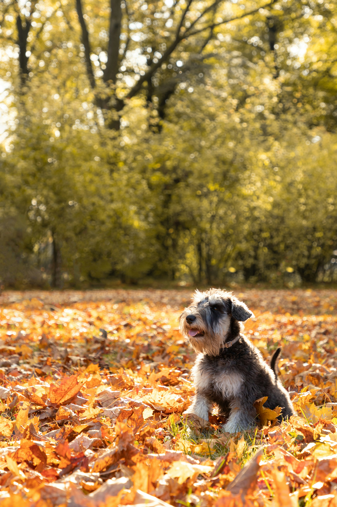
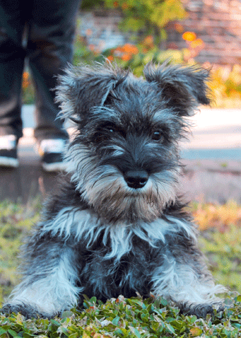

Inserción de imagen
Los schnauzers son una raza de perros conocida por su distintiva apariencia, personalidad amigable y su inteligencia. Esta raza se divide en tres tamaños: miniatura, estándar y gigante. A continuación, se presenta una información detallada sobre los schnauzers, incluyendo su historia, características físicas, temperamento, cuidados y más.
1. Historia
Origen: Los schnauzers son originarios de Alemania, donde se utilizaban como perros de granja para el pastoreo y la protección de ganado. Se cree que la raza se desarrolló a partir de cruces entre terriers y perros de trabajo, como el Pinscher.
Nombre: El término "Schnauzer" proviene de la palabra alemana que significa "hocico", en referencia a su distintivo hocico alargado.
Reconocimiento: La raza fue reconocida oficialmente por el American Kennel Club (AKC) en 1904. Cada tamaño de schnauzer tiene su propio estándar de raza.

Imagen flotante
 2. Características físicas
Schnauzer Miniatura
Altura: Entre 30 y 36 cm (12-14 pulgadas).
Peso: Entre 4.5 y 9 kg (10-20 libras).
Capa: Densa, dura y de doble capa; puede ser de varios colores, incluidos sal y pimienta, negro y negro con plata.
Schnauzer Estándar
Altura: Entre 45 y 50 cm (17-20 pulgadas).
Peso: Entre 14 y 20 kg (30-45 libras).
Capa: Similar al miniatura, con una textura densa y dura. Los colores son los mismos.
Schnauzer Gigante
Altura: Entre 60 y 70 cm (24-28 pulgadas).
Peso: Entre 25 y 48 kg (55-100 libras).
Capa: Densa y dura, también puede ser sal y pimienta o negro.
2. Características físicas
Schnauzer Miniatura
Altura: Entre 30 y 36 cm (12-14 pulgadas).
Peso: Entre 4.5 y 9 kg (10-20 libras).
Capa: Densa, dura y de doble capa; puede ser de varios colores, incluidos sal y pimienta, negro y negro con plata.
Schnauzer Estándar
Altura: Entre 45 y 50 cm (17-20 pulgadas).
Peso: Entre 14 y 20 kg (30-45 libras).
Capa: Similar al miniatura, con una textura densa y dura. Los colores son los mismos.
Schnauzer Gigante
Altura: Entre 60 y 70 cm (24-28 pulgadas).
Peso: Entre 25 y 48 kg (55-100 libras).
Capa: Densa y dura, también puede ser sal y pimienta o negro.
3. Temperamento Inteligencia: Los schnauzers son conocidos por su inteligencia y capacidad de aprendizaje rápido. Son perros muy alertas y perceptivos. Personalidad: Tienen una personalidad amigable y extrovertida, son leales a sus dueños y suelen ser buenos con los niños. Pueden ser reservados con extraños, lo que los convierte en buenos perros de guardia. Energía: Los schnauzers son activos y juguetones, necesitan ejercicio regular y estimulación mental para evitar comportamientos destructivos. Socialización: Es importante socializarlos desde una edad temprana para que se sientan cómodos en diferentes entornos y con diversas personas y otros animales.
 4. Cuidados Ejercicio: Requieren ejercicio diario, como paseos, juegos y actividades físicas. Esto ayuda a mantener su salud y bienestar general. Aseo: Necesitan un cepillado regular, especialmente en el caso del schnauzer estándar y gigante, para evitar enredos y mantener su pelaje en buenas condiciones. También requieren recortes periódicos. Entrenamiento: Debido a su inteligencia, son generalmente fáciles de entrenar. Se benefician de un entrenamiento constante y positivo, así como de la socialización. Salud: Al igual que muchas razas, los schnauzers pueden ser propensos a ciertos problemas de salud, como displasia de cadera, problemas oculares y enfermedades de la piel. Es importante llevarlos al veterinario regularmente.
5. Dieta Alimentación: Una dieta equilibrada y de alta calidad es crucial para su salud. Las necesidades dietéticas pueden variar según la edad, tamaño y nivel de actividad del perro. Consulta a un veterinario para recomendaciones específicas.
6. Popularidad Compañeros: Son perros de compañía populares debido a su personalidad amigable y su capacidad para adaptarse a la vida familiar. Trabajo: Históricamente, los schnauzers se han utilizado como perros de trabajo, en roles que van desde perros de granja hasta perros de búsqueda y rescate, y también en funciones de terapia.
Imagen con movimiento
7. Datos curiosos Características distintivas: Su barba y cejas prominentes son características distintivas de la raza, que les dan una apariencia distintiva y expresiva. Compromiso con la salud: Muchas organizaciones de criadores de schnauzers trabajan para promover prácticas de cría responsables y garantizar la salud y el bienestar de los perros.
8. Cualidades de cada tamaño Miniatura: Ideal para apartamentos y espacios pequeños, son muy juguetones y requieren menos ejercicio que sus contrapartes más grandes. Estándar: Balancean la energía y la tranquilidad, siendo buenos tanto para familias activas como para aquellos que buscan un compañero más calmado. Gigante: Aunque son grandes y pueden parecer intimidantes, son conocidos por su naturaleza gentil y protectora, siendo excelentes compañeros familiares.
Imagen como background
9. Comportamiento y entrenamiento Comportamiento general: Protección natural: Los schnauzers, en especial los gigantes y estándares, son conocidos por ser excelentes perros de guardia. Tienen un instinto protector y, aunque no suelen ser agresivos, son extremadamente vigilantes. Caza de roedores: Dado su origen como cazadores de ratas y pequeños animales, tienen una inclinación natural hacia la persecución. Esto puede ser problemático si conviven con mascotas más pequeñas, como conejos o hámsteres. Personalidad independiente: Son perros que disfrutan de la compañía humana, pero también pueden ser bastante independientes. Esto significa que no suelen sufrir tanto de ansiedad por separación como otras razas, aunque pueden llegar a ser testarudos si no reciben la atención y ejercicio adecuados. Entrenamiento: Inteligencia y facilidad de entrenamiento: Los schnauzers son perros muy inteligentes, lo que los hace fáciles de entrenar. Sin embargo, también son conocidos por su terquedad, por lo que es crucial usar técnicas de refuerzo positivo y ser coherente en el entrenamiento. Socialización temprana: Es vital socializarlos desde una edad temprana para evitar problemas de comportamiento, como la agresividad hacia otros perros o la timidez extrema. La exposición a diferentes personas, lugares y animales durante la etapa de cachorro les ayudará a convertirse en perros equilibrados y sociables. Ejercicios mentales: Además de actividad física, necesitan desafíos mentales para mantenerse equilibrados. Juegos de inteligencia, juguetes interactivos y actividades como la búsqueda de objetos son excelentes para mantener su mente activa.
10. Cuidados específicos Cuidado del pelaje: El pelaje del schnauzer es característico por su doble capa: una capa exterior áspera y un subpelo suave. El aseo regular es esencial, ya que tiende a enredarse y formar nudos. Cepillado: Es recomendable cepillar el pelaje dos o tres veces a la semana, especialmente si el perro tiene acceso al exterior, ya que puede acumular suciedad en la barba y las patas. Corte de pelo: Muchos propietarios de schnauzers optan por un corte de pelo profesional cada 6 a 8 semanas. El corte típico de schnauzer incluye la barba prominente, cejas distintivas y un cuerpo recortado. Baños: No requieren baños excesivos. Bañarlos cada mes o cuando estén especialmente sucios es suficiente para mantener su pelaje y piel en buen estado. Cuidado dental: Como muchas razas pequeñas, los schnauzers miniatura pueden ser propensos a problemas dentales, como la acumulación de sarro y enfermedades de las encías. El cepillado regular de los dientes y proporcionarles juguetes dentales o golosinas especiales puede ayudar a prevenir estos problemas. Cuidado de las uñas: Sus uñas deben ser recortadas regularmente para evitar que se rompan o se encarnen. Si el perro es muy activo, las uñas pueden desgastarse de manera natural, pero siempre es bueno revisar su longitud periódicamente.
11. Schnauzers y familias Convivencia con niños: Los schnauzers, especialmente el estándar y el miniatura, suelen ser excelentes compañeros para las familias con niños. Son juguetones y, en general, pacientes, pero es importante supervisar cualquier interacción entre perros y niños pequeños para asegurarse de que ambas partes respeten los límites. Convivencia con otras mascotas: Pueden convivir con otros perros si son socializados desde una edad temprana. Sin embargo, dado su instinto cazador, pueden no llevarse bien con animales pequeños como gatos, conejos o hámsters.
12. Schnauzer en la cultura popular Los schnauzers son conocidos por su aspecto elegante y su naturaleza divertida, y han aparecido en numerosas películas, series de televisión y anuncios a lo largo de los años. Además, son una raza popular entre celebridades y figuras públicas. Representaciones en medios: La apariencia distintiva y expresiva del schnauzer ha sido utilizada en dibujos animados, comerciales y campañas publicitarias. Por su inteligencia y facilidad para ser entrenados, son también una raza que frecuentemente aparece en espectáculos de obediencia y agility.
13. Variedades y cruces populares Además de las tres variedades estándar (miniatura, estándar y gigante), los schnauzers han sido cruzados con otras razas, lo que ha dado lugar a nuevas variedades o "híbridos" populares, como: Schnoodle: Un cruce entre schnauzer y poodle (caniche). Estos perros combinan la personalidad del schnauzer con el pelaje hipoalergénico del poodle. Schnug: Una mezcla entre schnauzer y pug (carlino), que suele ser más pequeño y robusto, pero conserva la inteligencia del schnauzer.